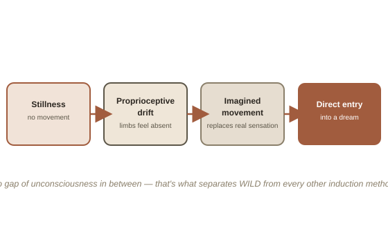

Chapter 3: The Technique You Already Have
Chapter 2 covered building the habit of doubting reality and rehearsing intention through MILD — both aimed at catching a dream you have no control over the timing of. There's a more direct route, and if you've spent time lying still until your limbs stop feeling like they exist and you can "move" an arm that hasn't actually moved, you've already been practicing most of it, likely for years, probably under a different name.
What you've been doing, in the terminology this field uses
What you're describing is the entry sequence for WILD (Wake-Induced Lucid Dream) — the technique most guides present as the hardest and most advanced, usually recommended only once reality testing and Wake-Back-to-Bed are already comfortable. For someone who's already spent years practicing this specific stillness technique, it may be closer to the opposite: the hard part, for most people, is exactly the part that's apparently already trained.
Lying completely still does most of the early work. The sense of where your limbs are isn't a fixed readout — it's actively maintained by proprioception (the sense of your body's position and movement, even with your eyes closed), which depends partly on a steady stream of small corrective micro-movements and the expected sensory feedback from them. Stop moving entirely, long enough, and that feedback loop runs dry — which is the actual mechanism behind limbs "feeling like they don't exist." At the same time, staying awake while the body drifts toward sleep puts you right at the edge of naturally occurring REM atonia, the paralysis your body imposes every night during REM sleep specifically to stop you from acting out dreams — normally invisible, because you're unconscious when it happens. Practicing this technique means staying conscious through it instead of falling asleep first.
The part where you imagine an arm moving while it stays still is a deliberate, well-documented technique in its own right, not incidental. Once real proprioceptive signal has gone quiet, a vividly imagined movement has far less competing signal to override, and can start to feel close to indistinguishable from something actually happening. This is usually the tipping point: the imagined movement stops feeling imagined and starts feeling like the beginning of a dream body, formed directly out of the stillness, with no gap of unconsciousness in between — which is the entire point of WILD, and exactly what separates it from every other technique in this arc.

Why avoiding a blanket is standard advice — and why doing it anyway is a good sign
Skin contact from a blanket delivers exactly the kind of fresh, reliable tactile signal that works against the proprioceptive drift the technique relies on — it's real, current sensory information competing with the fading, ambiguous signal that's supposed to take over instead. Managing it with a blanket on, and lying sideways (a position most guides also discourage, since it's less naturally still than lying flat on the back), suggests unusually strong ability to sustain this specific state against real interference, not just under ideal, distraction-free conditions.
Marrying the technique to the timing that gives it the best odds
REM periods lengthen across the night, with the richest stretch landing roughly 4.5 to 6 hours after sleep onset. A well-practiced stillness technique doesn't need that timing to work at all — it clearly already works at ordinary bedtime. But it will have meaningfully better odds of turning into an actual dream, rather than just a deep relaxation session, if it's attempted specifically inside that later REM-dense window, after a brief natural or deliberate waking — the same Wake-Back-to-Bed timing this chapter originally covered as its own separate method. The practice itself doesn't need to change. Only when it's run does.
The honest fallback, for the nights it doesn't land
Even highly practiced attempts at this don't turn into a dream every time — sometimes the stillness just leads to ordinary sleep, with no clean transition. That's not a failure of the technique or of the person doing it; it's the expected, normal outcome on a meaningful share of attempts, for everyone who does this. On those nights, nothing is wasted: it simply becomes falling asleep normally from a very relaxed state, and Chapter 2's reality testing habit is still running in the background, ready to catch an ordinary, unconsciously-entered dream instead — the safety net underneath the main technique, not a separate, lesser path.
Try this
Ideas for noticing or testing this in your own life.
- Try the stillness technique inside a WBTB window specifically: next time you wake naturally in the second half of the night, stay up briefly and alert, then return to bed and run the usual practice instead of just falling back asleep passively.
- Notice what happens right after the imagined-movement stage: pay close attention to whether sensation shifts toward buzzing, falling, or a sense of a scene starting to form — these are common signs the transition into a dream is actually beginning, worth recognizing rather than second-guessing out of surprise.
Worth pulling on?
A few loose threads from this chapter — if any of these genuinely grab you, that's a good sign of where to go next.
- This exact sequence — stillness, limb "dissolution," imagined movement, a sense of vibration or separation — is also the standard method taught in astral projection guides, describing the same underlying transition through a different framework. → Already in the library: Out-of-Body Experiences covers the TPJ mechanism behind the "separation" interpretation of this same state.
- If the paralysis itself ever feels uncomfortable rather than just unfamiliar, deliberately trying to twitch a single finger is the standard, reliable way to break it immediately — worth knowing in advance, even though the state itself isn't dangerous.